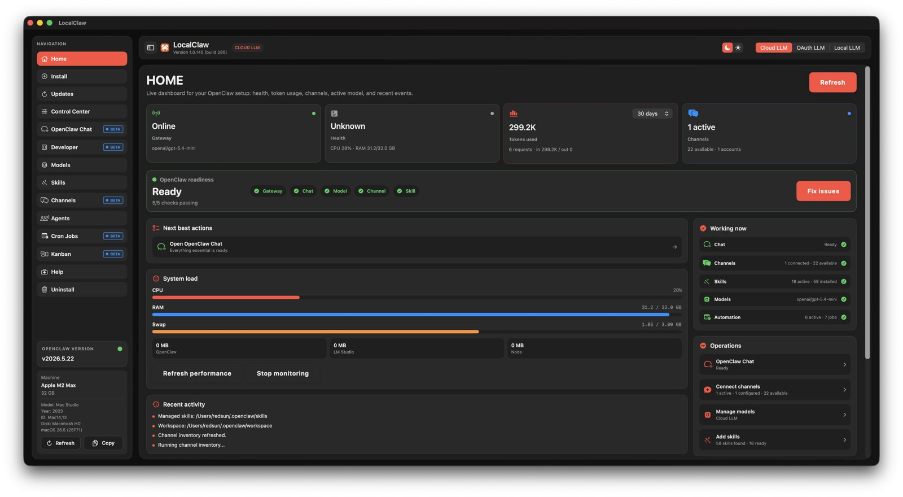

LocalClaw 1.0.170
This release focuses on the part customers feel most: knowing whether OpenClaw is truly ready, recovering safely when it is not, and keeping daily work clear across chat, development, models, and automations.

What changed
Home, Help, Models, Chat, and Control Center now report the same Gateway, model, and authentication state.
LocalClaw creates private restore points before sensitive maintenance and can export a support report with credentials redacted.
Essentials and Advanced navigation reduce clutter, while OpenClaw Chat and Developer keep their own inputs, images, and sessions.
Manual Cron and Kanban runs retain their agent, model, destination, duration, and outcome for easier diagnosis.
The advisor ranks curated local models for the Mac and workload, with a validated remote catalog and a built-in offline fallback.
The release pipeline now stages outside synced folders before signing, preventing file-provider metadata from breaking codesign.
Open Updates in LocalClaw and install version 1.0.170. Your OpenClaw configuration, channels, projects, and local models are preserved.